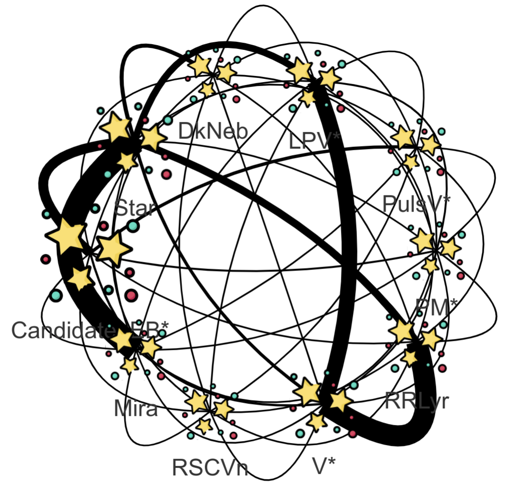

|  |
Lomikel is a set of general purpose tools.
@VERSION@ [@BUILD@]
|
Documentation
- JavaDoc
- JavaSource
- GroovyDoc
- https://github.com/hrivnac/Lomikel.git (ready-to-run application in dist directory)
- Externals:
Java,
JavaFX,
HBase,
JanusGraph,
TinkerPop,
HttpClient,
JS9,
vis.js,
jQuery,
jQuery UI,
w2ui,
joinery,
Popper,
Py4J,
Font Awesome,
BootStrap,
BootStrap Table,
Moment.js,
Knockout.js,
CLI Parser,
org.json,
d3.js,
Venn Diagrams,
d3-celestial,
HealPix,
Jython (for Jython client, optional),
JPype (for CPython client, optional),
Gremlin Python (for Phython client, optional),
Sage (to perform math analyses, optional),
MatPlotLib (to perform math analyses, optional),
Jupyter (to run in a Notebook),
SciJava Jupyter kernel (for Java Notebook)
- Tools:
Ant,
J2H,
Vizant,
UmlGraph,
UmlDoclet,
FindBugs,
SpotBugs,
CleanImports,
ApiViz,
JDepend
- build dependencies
Customisation
- Servers.jsp contains the list of Gremlin servets
- Graphs.jsp contains the list of initial graphs, formed as Gremlin queries
- bootgreamlin property contains the specific Gremlin query
Options
- profile for initial calls (null, test, autostart)
- style for pane setup (null, test, simple)
Available as a Maven/Gradle Package or for direct download:
# download Lomikel-@VERSION@.jar
# download Lomikel-ext-@VERSION@.jar
# then
# download Lomikel-@VERSION@.exe.jar
# for pure Lomikel
# download Lomikel-HBase-@VERSION@.jar
# and
# Lomikel-HBase-@VERSION@.exe.jar
# for Lomikel with HBase support
# download Lomikel-Janus-@VERSION@.jar
# and
# Lomikel-Janus-@VERSION@.exe.jar
# for Lomikel with Janus and HBase support
# and
# Lomikel-py4j-@VERSION@.exe.jar
# for Lomikel Python zserver (with Janus and HBase support)
#
# then set an alias to appripriate exe.jar file
$ alias lomikel='java -jar Lomikel*.exe.jar'
#
# then call
$ lomikel -h
usage: java -jar Lomikel.exe.jar [-a ] [-b] [-g] [-h] [-n] [-q] [-s <file>] [-w]
-a,--api <language> cli language: [groovy|python] (othewise taken from source extension, defauld is groovy
-b,--batch run in a batch
-g,--gui run in a graphical window
-h,--help show help
-n,--notebook run in an notebook
-q,--quiet minimal direct feedback
-s,--source <file> source script file (init. is also sourced)
-w,--web run as a web service
Bugs
- Individual Vertex properties overriden by Group properties
(vis.js bug).
- Zoom clustering doesn't work in case of circular edges
(vis.js bug).
- Only batch CLI works for Python CLI.
- DataLink not clusterise.
Inconsistencies
- Switching 'hierarchical on/off changes the graph params.
ToDos
- Migrate Jyrthon to GraalPy.
- Use graph flow algorithm for overlaps.
- DataLink in WS.
- In WS, give equivalent CLI.
- DB client to return DataGram.
- 00.00.00:
- 00.01.00:
- Graph added.
- GraphView.js, GraphView.jsp, Options.js added.
- Zoom clustering addeed.
- Expanding existing nodes from the database in Graph added.
- HBaseTable.jsp for HBase searching.
- 00.02.00:
- Flexible WS added, confugurable via Stylesheet.js.
- JanusGraph configuration added.
- Migrated to vis-network-7.3.6.
- HBase tables with schema supported.
- Movable panes via GridStack.
- 00.03.00:
- Better Graphics.
- Better HBase view.
- 00.04.00:
- Graphs from HBase.
- Groups of HBase rows.
- 00.05.00:
- Migrated from HBase REST client to direct client.
- 00.06.00:
- Including CLI apps.
- Renamed to Lomikel.
- Better CLI,GUI.
- Faster HBase, using startrow, stoprow.
- Filtering HBase results by formula.
- 00.07.00:
- It is possible to add graphs into view.
- Bootstrap profiles.
- Multilevel boot graph loading to.
- Januser added.
- Implicite Schema extraction.
- Dist added to git.
- Dist for external sites.
- Graph+Plot via tabs.
- Web style added.
- 00.07.02:
- Improved WS presentation.
- Link from HBase table to Graph.
- 00.08.00:
- HBaseClient.limit(...) is used after eventual Evaluation.
- Interface to Jython.
- Julian date correctly interpreted.
- Asynch loading of panes.
- Access to Gremlin from CLI.
- Range selectors added.
- New Pair<> class.
- Improved HBaseClient.timeline and latests.
- 00.09.00:
- HBaseClient can create and write tables.
- Can request data in reversed order.
- Using d3.js.
- ScatterPlot from HBase.
- EvolutionPlot frpm HBase.
- 00.10.00:
- Improvements to plotting.
- 00.11.00:
- Sky view added via d3-celestial.
- Sockets moved from Atlascope.
- Custom and Range selectors moved from FinkBrowser.
- Clickable Scatter Plot, Evolution Plot and Sky View.
- Navigation from plots to hbase.
- 00.12.00:
- Populating graph from hbase.
- JanusGraph authentication added.
- Access to JanusGraph via Tomcat.
- Port working in IJCLab.
- 00.13.00:
- Imported Januser from Atlacope.
- Vertex dressed with values from HBase.
- GremlinPlugin added.
- ElasticSearch added.
- Indexing.
- 01.00.00:
- DB package as superpackage to HBaser and Phoenixer.
- Graph Vertex backed by HBase or Phoenix.
- Efficient indexing.
- 02.00.00:
- Phoenix proxy server running @CERN.
- Graphics re-arranged around graphs (instead of hbase tables).
- Patched JanusGraph server to allow CORS.
- Graph-based tables.
- Starting two janus servers: ws/http and http-cors.
- Added Proxy.jsp server.
- Generating test graph.
- Adding basic properties and overlaps to schema.
- Adding Venn diagrams.
- 02.01.00:
- Direct connection to Phoenix Server from JanusGraph works.
- Functions moved to Lomikel groovy class.
- DataLinks introduced.
- Migrated to JanusGraph 0.6.2.
- 02.02.00:
- GremlinRecipies.structurise(..) added.
- GremlinEvaluatior separated from HBaseEvaluator.
- HBaseClient.put(...) handles types.
- 03.00.00:
- Transferable or physical repository for binary data on HBaseClient.
- HBaseSQLClient added.
- Possibility to replicate data in SQL database.
- FinkBrowser project moved in.
- Fink: AlertsOfInterest vertexes.
- JS -aON, CSV, GraphML export.
- 03.01.00:
- Added Python scripting.
- Added directory for working scripts.
- Added indexing to ElasticSearch.
- Added AsynchHBaseClient.
- SmallHttpClient handles https connections.
- Fink: SourcesOfInterest management.
- 03.02.00:
- Possibility to run embedded Web Service.
- Imporoved overlaps.
- Upgraded to Java 11, JanusGraph 1, ElasticSearch 7, HBase 2.5.8, Hadoop 3, Log4J 2.
- 03.03.00:
- Added full support for Groovy.
- Migrated part of GremlinRecipies to Groovy.
- 03.04.00:
- Enabled multiple schemas for Fink alerts.
- AsychHBaseClient can be stopped.
- Can store multi-version cells.
- Fink: Can convert variables from alert table into multiversioned curves per objectId.
- Fink: Can insert lightcurves as ultiversioned curves per objectId.
- Added database delete(key).
- Exported as Maven distribution.
- search3D can give key and timnestamp.
- DB.Client.result2DF(...) added.
- Livyser added to access Spark.
- ESClient improved.
- 03.05.00:
- Adding Py4J Server.
- Full chain for classification by clusterring Fink alert features.
- Multiple classification graphs.
- 03.06.00:
- Fixed Groovy Console.
- BeanShell replaced with Groovy everywhere.
- 03.07.00:
- Migrated to new Fink infrastructure.
- Improved LightCurve learning.
- Exported as Maven reposiotory.
- TagClassifier added.
- Neigborhood WS added.
- **.**.**:
Related Documentation
- 2018:
- GraphDB (LAL Dev, LAL, November'18)
- GraphDB (Atlas SW WS, CERN, December'18)
- 2019:
- 2020:
- 2021:
- Graph and Data Explorer (LSST, IJCLab, January'21)
- Atlascope (EI WS, Virtual, January'21)
- Atlascope (EI WS, Virtual, May'21)
- Atlascope (EI WS, Virtual, Oct'21)
- New Event Index (Atlas, IJCLab, Dec'21)
- 2022:
- Universal and Native Client (ATLAS EI, Virtual, January'22)
- Fink in Graph Database (Fink, LAPP, May'22)
- Existing Reusable Functionality (ATLAS EI, CERN, October'22)
- Secondary Tables (ATLAS EI, Virtual, October'22)
- Bases de donnees federees (JI, Croisic, November'22)
- Fink Graphs (Fink Hackaton, Grimentz, November'22)
- 2023:
- 2024:
 J.Hrivnac @BUILD@
J.Hrivnac @BUILD@
{kind=link}